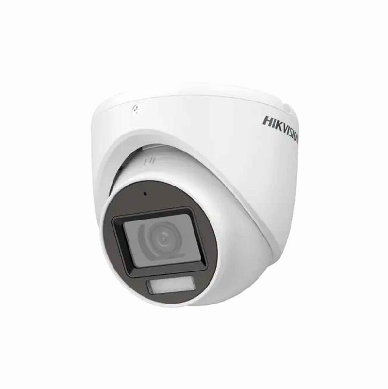
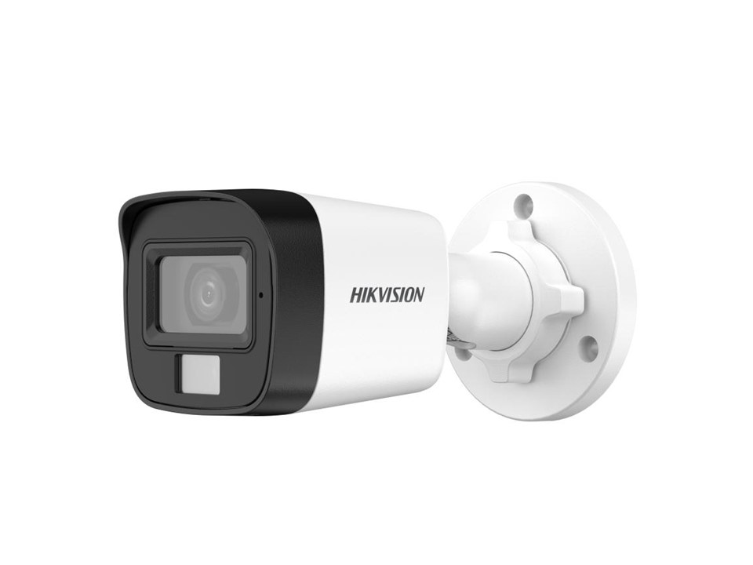
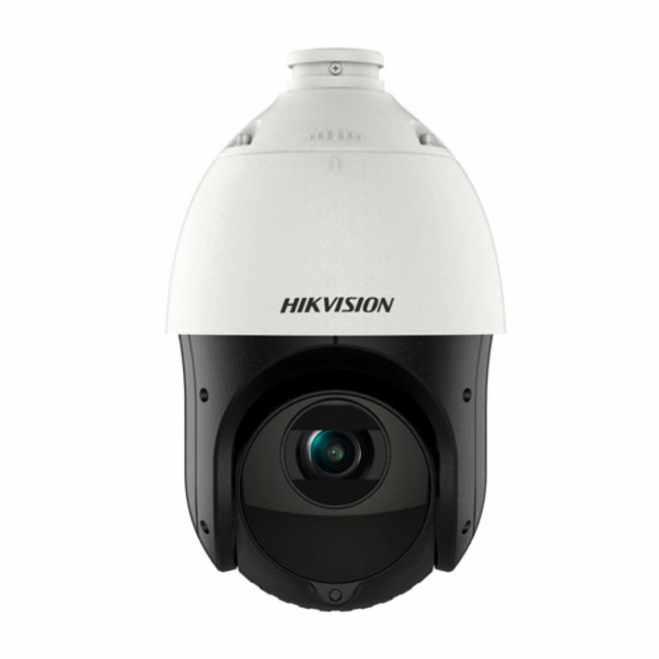
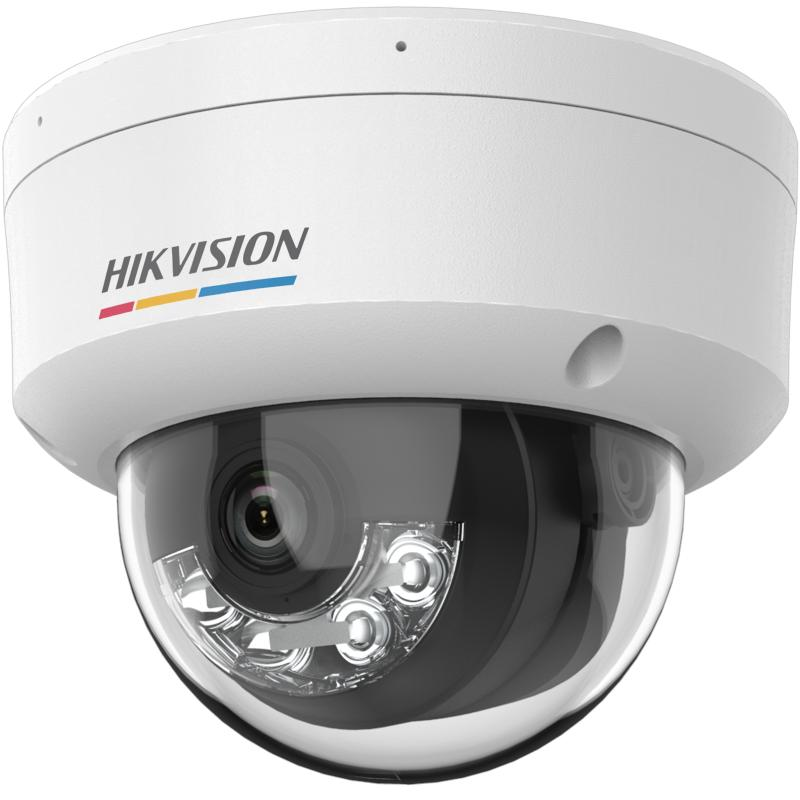
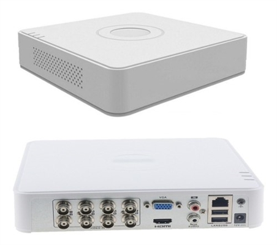
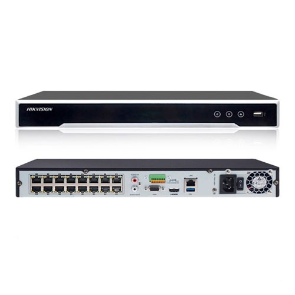
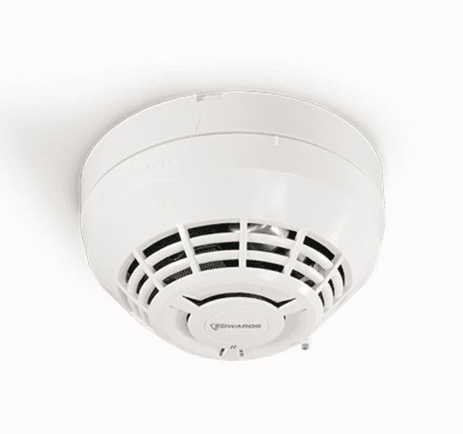
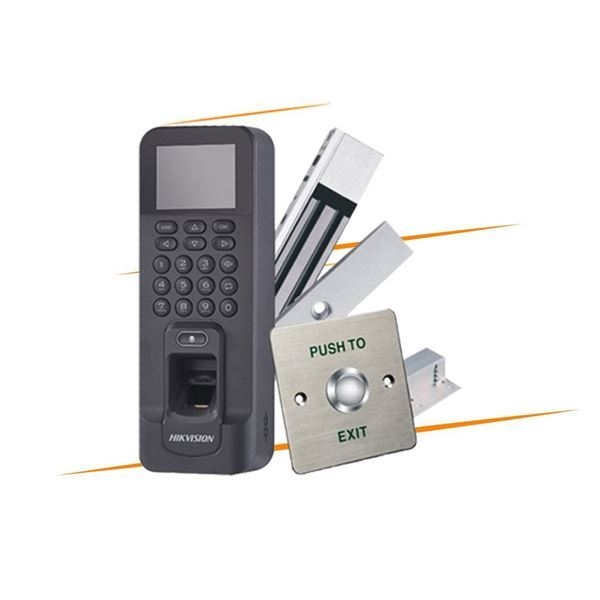

Instalación y mantenimiento de cámaras, sensores de humo y controles de acceso.
Instalación y mantenimiento de cámaras, sensores de humo y controles de acceso.
Sistemas Integrados Digitales es una empresa dedicada a la instalación y mantenimiento de sistemas de seguridad como cámaras de videovigilancia, sensores de humo y controles de acceso. Brindamos soluciones modernas y confiables para hogares, empresas e instituciones, asegurando protección y control en cada espacio, junto con mantenimiento para garantizar el correcto funcionamiento de todos los sistemas

Las cámaras domo de Hikvision destacan por su diseño compacto y resistente, ideal para interiores o exteriores discretos. Ofrecen resoluciones desde Full HD (2MP) hasta 4K, visión nocturna por infrarrojos, tecnología ColorVu para imágenes a color 24/7, audio bidireccional y detección inteligente de intrusos. Su formato es perfecto para monitoreo integral.

Las cámaras tipo bala de Hikvision son dispositivos cilíndricos diseñados para exteriores. Sus características principales incluyen resolución desde 2MP hasta 4K, visión nocturna con infrarrojos o a color 24/7 (tecnología ColorVu), protección IP67 contra agua y polvo, y funciones de inteligencia artificial AcuSense que detectan solo humanos o vehículos.

Las camaras PTZ de Hikvision son dispisitivos motorizados de videovigilancia diseñados para monitorear grandes areas. Ofrecen movimientos horizintal del 360° , inclnacion vertical y un potente zoom óptico de 25x a 32x o más que permite identificar detalles a grandes distacias sin perder caldad de imagenS

Las cámaras IP de Hikvision convierten las imágenes en datos digitales transmitidos por red. Destacan por su alta resolucion (hasta 4k), visión nocturna avanzada y tecnologías de Inteligencia Artificial (IA) para detección de personas y vehículos, evitando falsas alarmas.

Los DVR de Hikvision son grabadores digitales para sistemas de videovigilancia Permiten conectar cámaras analógicas (CCTV) para procesar, almacenar y visualizar video en tiempo real. Son ampliamente utilizados en hogares y negecios por su excelente relación costo-beneficio y su capacidad de gestión remota.

Información...

Información...

Información...
WhatsApp | Correo | Dirección